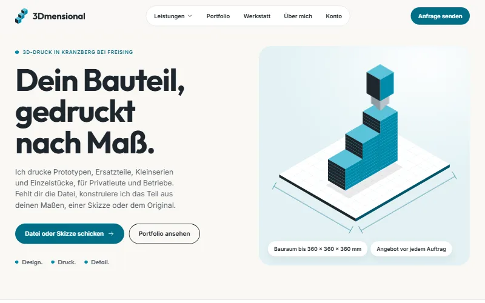
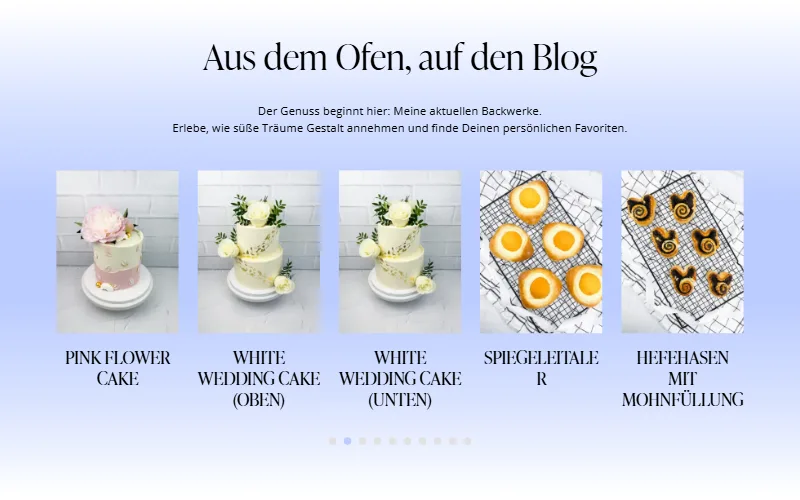
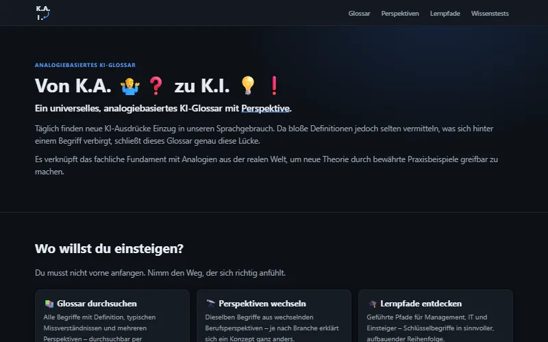
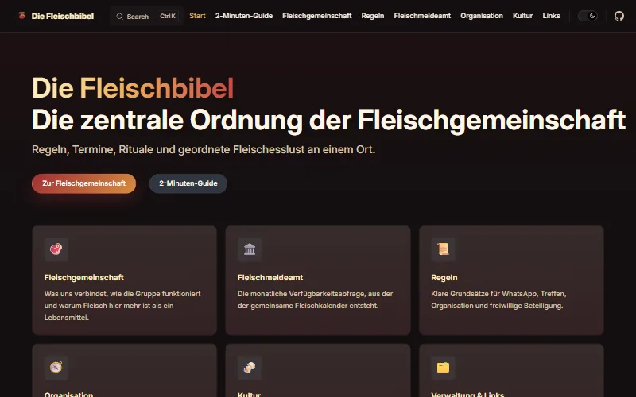
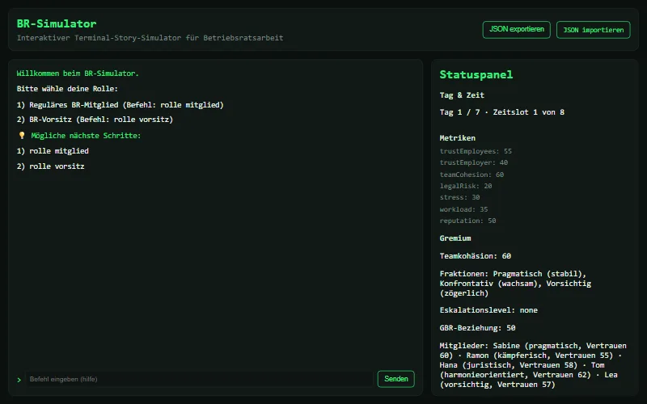
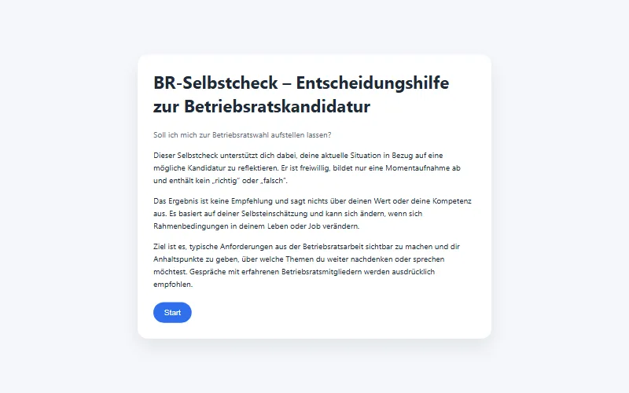
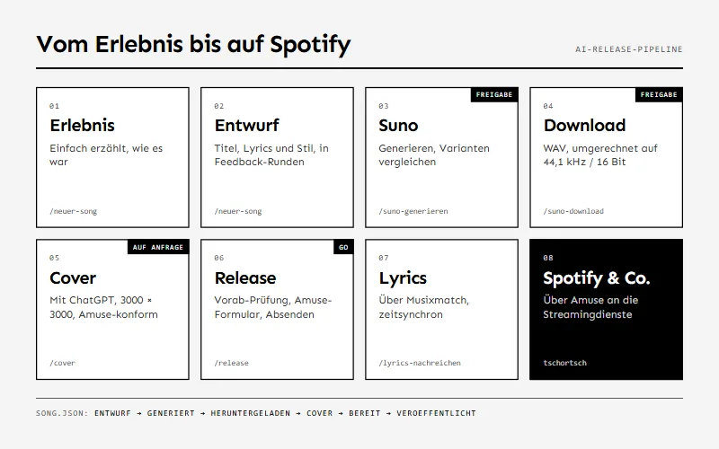

Ich bin Nikola, IT-Consultant, Designer und Maker aus Freising bei München. KI nutze ich als Werkzeug, die Ideen sind meine. Hier ist, was daraus geworden ist, jedes Projekt mit eigener Seite.







11 Projekte, statisch und ohne Tracking.